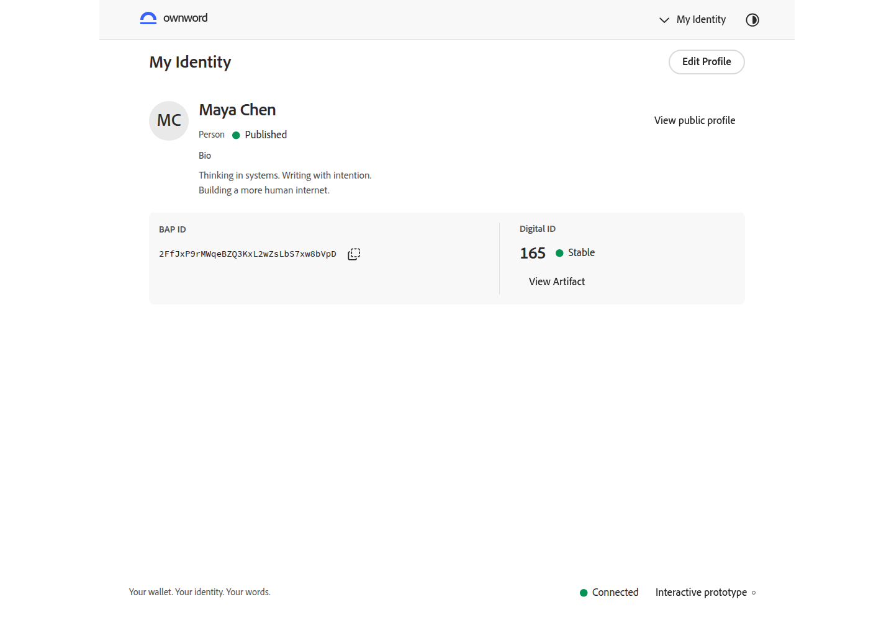
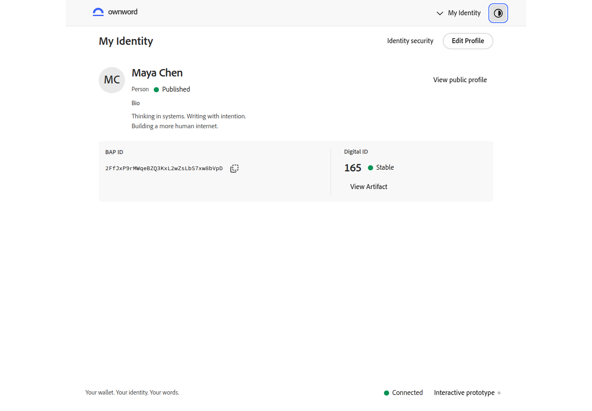
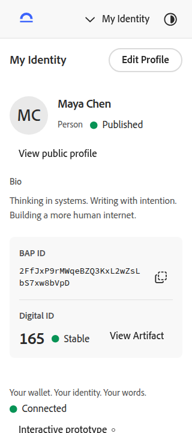
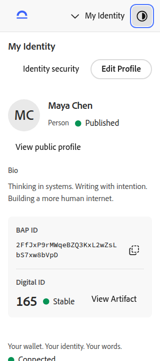
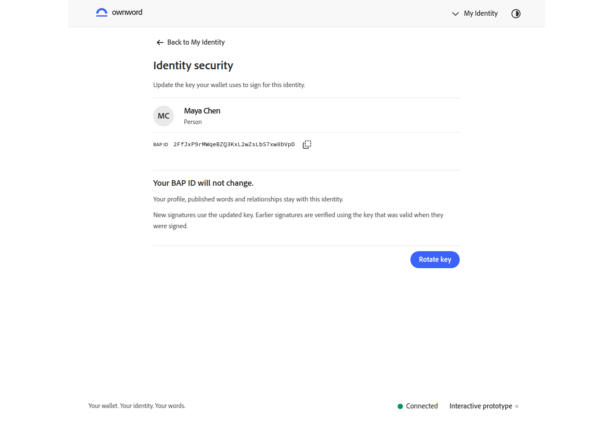
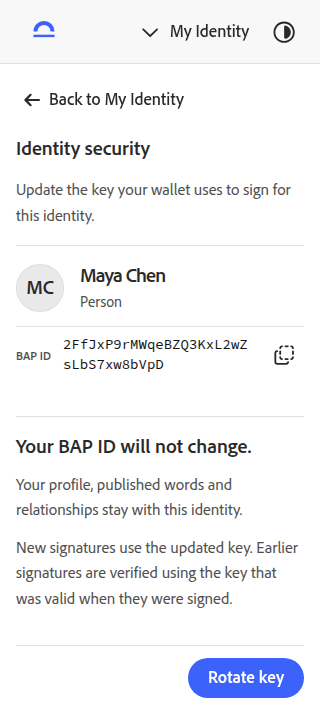
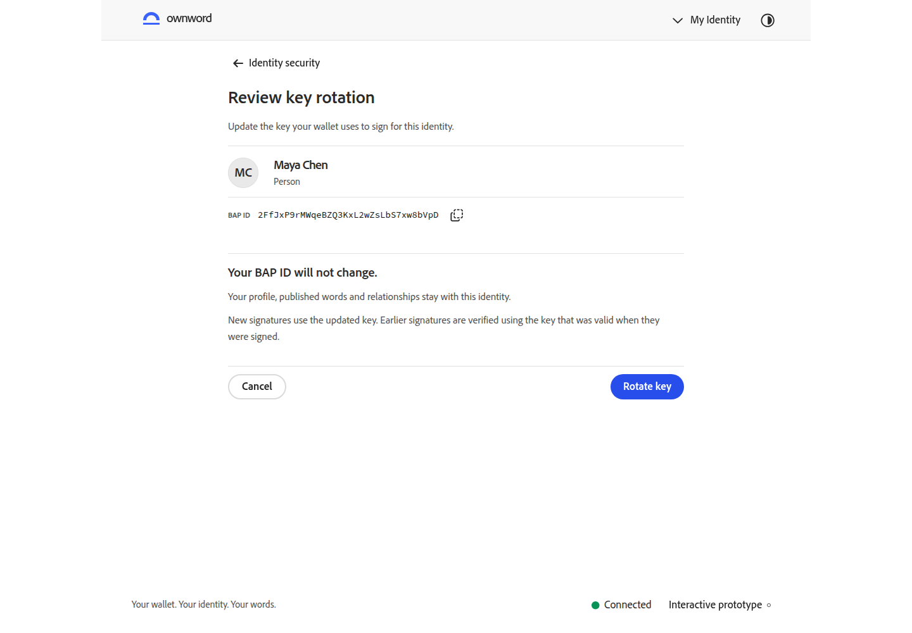
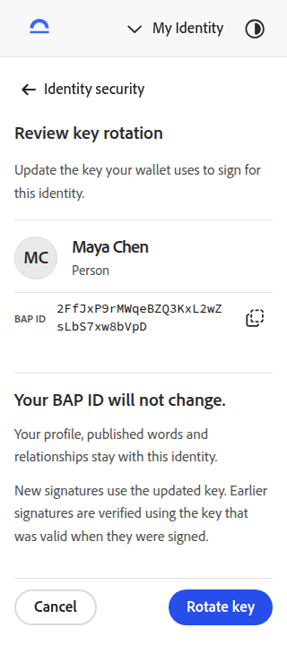
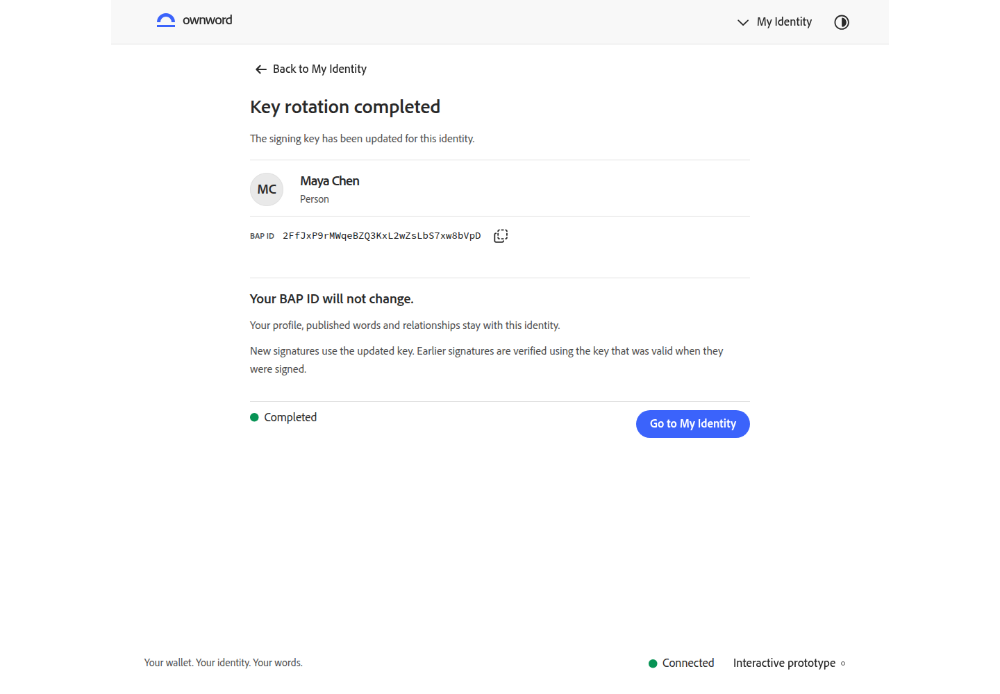
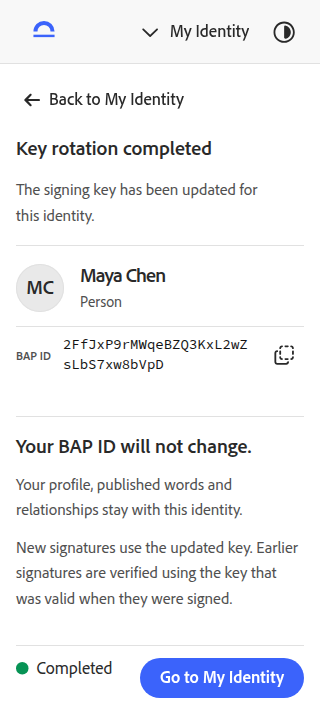

身份安全与密钥轮换
按 v0.1.0 设计补齐身份安全入口、轮换核对、模拟钱包授权、处理与结果。BAP ID、身份资料和原发布交易保持不变，历史签名独立按原密钥验证。
打开交互原型 · 上一轮：编辑器六组对照 · 编辑器逐动作清单 · 本轮原始验收记录 · 待视觉复核
26 项交互与 18 次自动无障碍检查通过。最新复核等待字体与网络稳定，浏览器错误为零；先前 9 条字体网络错误另存原始报告，未宣称外部 CDN 的间歇问题已修复。
桌面 · 1440 × 1000 · 身份安全入口
日常编辑与身份安全采用不同强调层级；完整标识和当前数字 ID 继续成组呈现。对照均为同一身份、英文浅色和视口。


手机 · 320 × 720 · 身份安全入口
日常编辑与身份安全采用不同强调层级；完整标识和当前数字 ID 继续成组呈现。对照均为同一身份、英文浅色和视口。


身份安全
先确认当前身份与完整 BAP ID，再进入轮换核对。


轮换核对
说明保持不变的事项和历史签名，取消与轮换操作集中在底部。


轮换完成
显示独立完成结果，可返回原身份继续使用。

